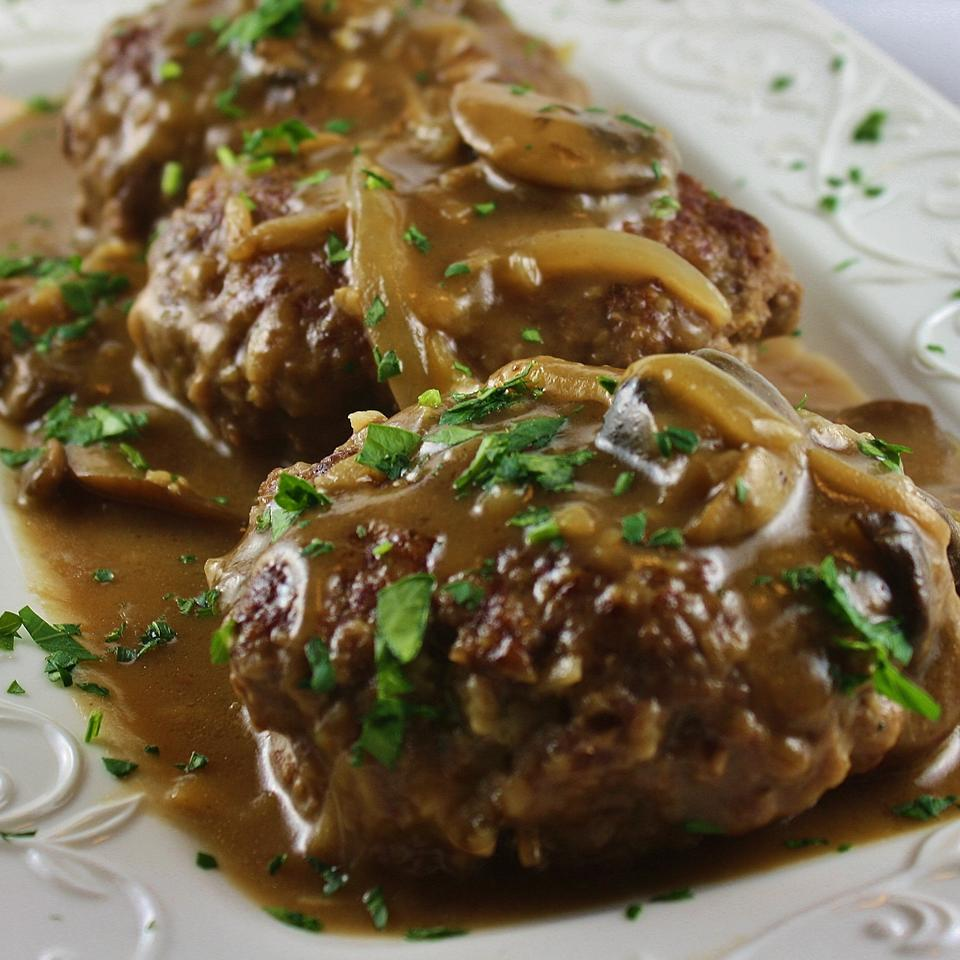

Salisbury Steak

- Prep: 15 mins
- Cook: 50 mins
- Total: 65 mins
- Servings: 5
- Yield: 5 Servings
Ingredients
Patties
- 1 pound ground sirloin
- ½ cup panko bread crumbs
- 1 egg, beaten
- 2 tablespoons milk
- ½ (1 ounce) package dry onion soup mix
- 1 teaspoon Worcestershire sauce
- ¼ teaspoon ground black pepper
Gravy
- 3 tablespoons butter
- 2 cups fresh mushrooms, sliced
- 1 sweet onion, sliced
- 3 tablespoons all-purpose flour
- ½ (1 ounce) package dry onion soup mix
- 1 ½ cups beef stock
- 1 cup water
- salt and ground black pepper to taste
Directions
- Mix ground sirloin, panko bread crumbs, egg, milk, and 1/2 packet onion soup mix, Worcestershire sauce, and black pepper together in a large bowl; shape into 5 patties.
- Heat a skillet over medium heat. Cook patties in hot skillet until browned, 3 to 5 minutes per side.
- Melt butter in a separate skillet over medium-high heat. Saute mushrooms and onion in melted butter until tender, 5 to 7 minutes. Stir flour and remaining dry onion soup mix into the mushroom mixture; cook and stir until flour is integrated fully, about 1 minute. Stream beef stock and water over the mushroom mixture while stirring continually; bring to a simmer, reduce heat to medium, and cook, stirring frequently, until the liquid thickens, about 5 minutes. Season with salt and pepper.
- Lie the browned steaks into the gravy; simmer until steaks are firm and gray in the center, about 30 minutes. An instant-read thermometer inserted into the center should read 160 degrees F (70 degrees C).
Nutrition Facts
Per Serving: 367 calories; protein 28.5g; carbohydrates 21.1g; fat 20g; cholesterol 113.5mg; sodium 6585.2mg.